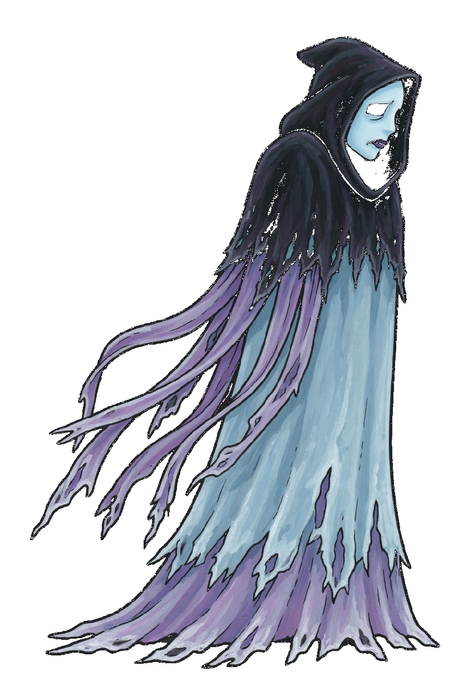
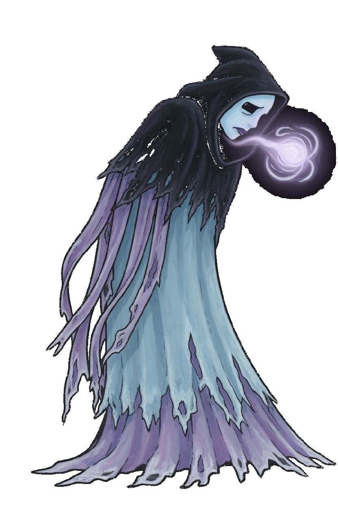
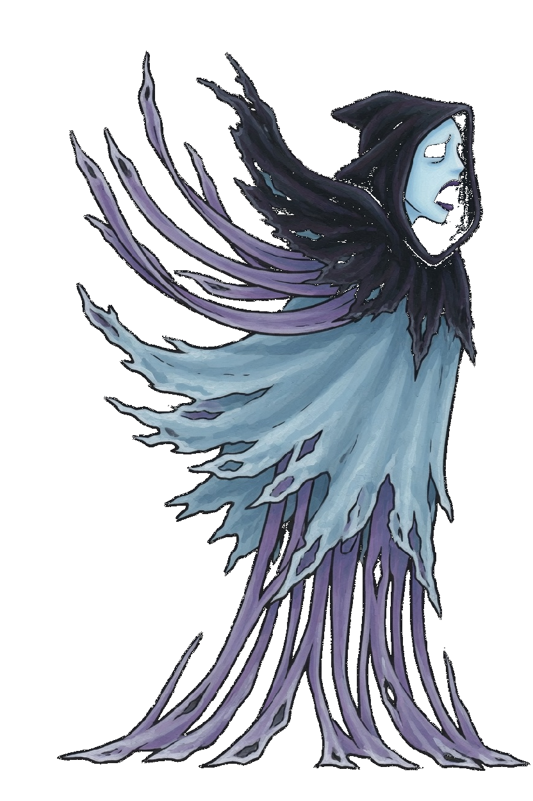
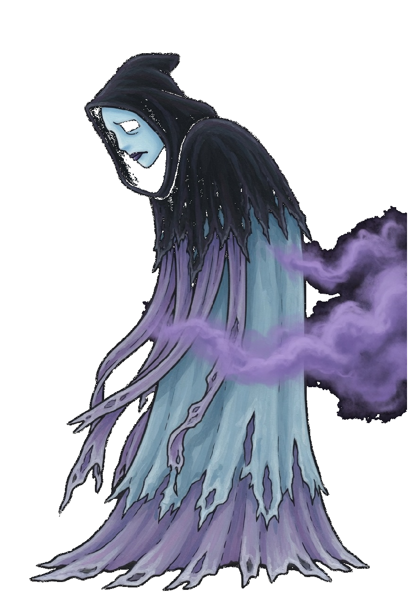
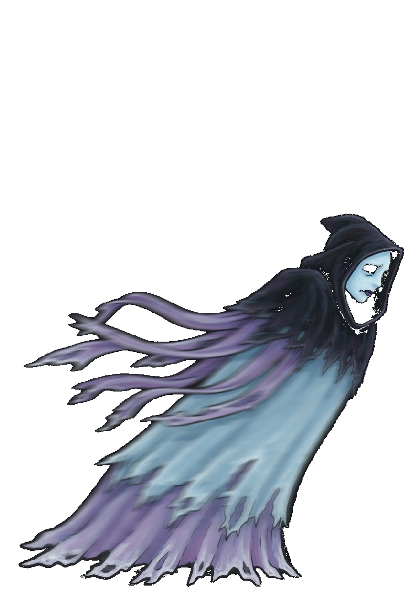
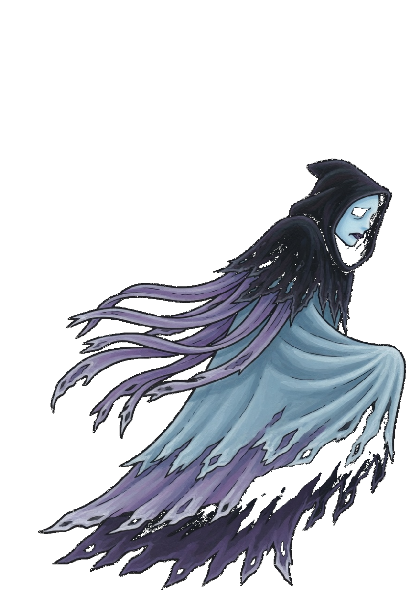
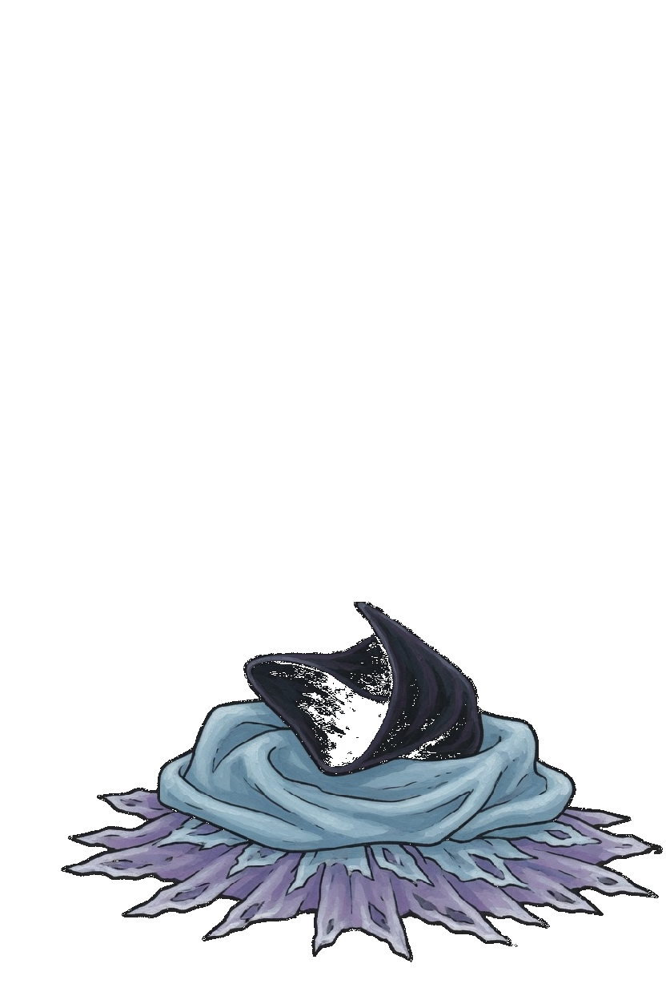
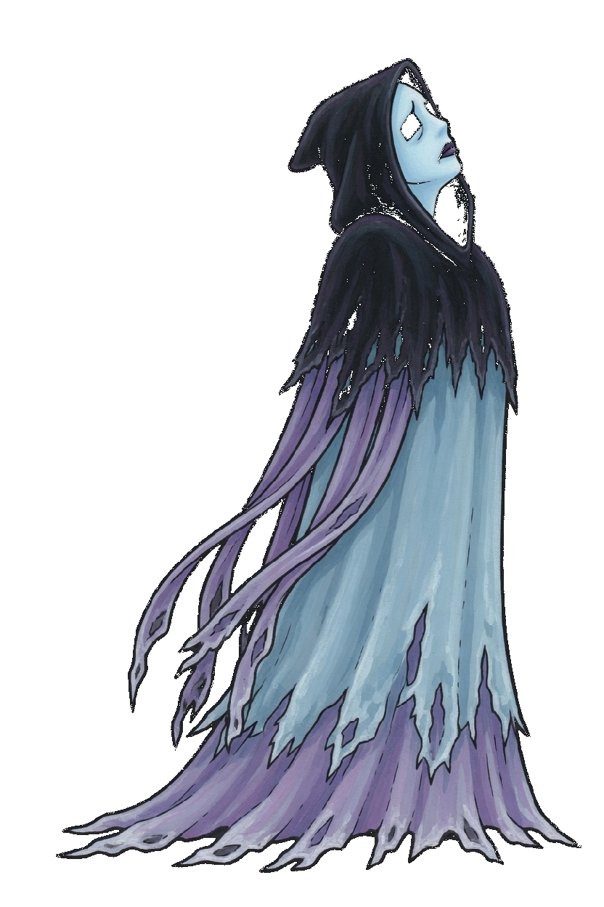

Wraith · Crypt Fodder
This card is the only pose list. A later frame has to match one of these keys. Native facing is right. The whole sprite flips. Pale ice-blue face in a dark hood, tattered pale-blue and violet shroud, no hands. The hem is the foot line. Wraith is a gun, so the corner step is Slip. There is no move named Dash and no Close key.
| Book | Value |
|---|---|
| Basic | Wraith Bolt · range 8.0 |
| Body | 650 health · 31 damage · 0.86 attacks/s · speed 2.6 · armor 4 · range 8.0 · mana 60 · regen 7 |
| Crit / cooldown | 0.10 crit · 0.88 cooldown scale |
| Cards | Haste · Nimble · Leech |
| Moves | Wail · Drain Cloud |
| Stride | Slip · a gun · 30s · cost 8 |
What stays off the body
- Wraith Bolt is a violet wisp. The shroud does not grow a hand to throw it.
- Wail is the cry. The ring is the howl on the ground, not a second body.
- Drain Cloud keeps that book name. The cloud on the shroud is the cast. Drain's own cloud picture stays Drain's.
Keys

Idle
Still hood, face to the right, hem on the foot line.

Wraith Bolt
Idle, then the wisp leaves the hood, then idle. 0.50s.

Wail
Idle, then the mouth opens and the cloth flares, then idle. 0.50s.

Drain Cloud
Idle, then the violet cloud leaves the shroud, then idle. 0.52s.

Slip
The shroud stretches toward the right, then idle. 0.35s. Corner step only.

Walk
Idle, then one drift with the hem lifted. 0.72s. Do not copy it into a second step.

Death
The shroud pools on the foot line. 1.55s. It is not scaled up to standing height.

Win
The hood lifts. 1.15s.